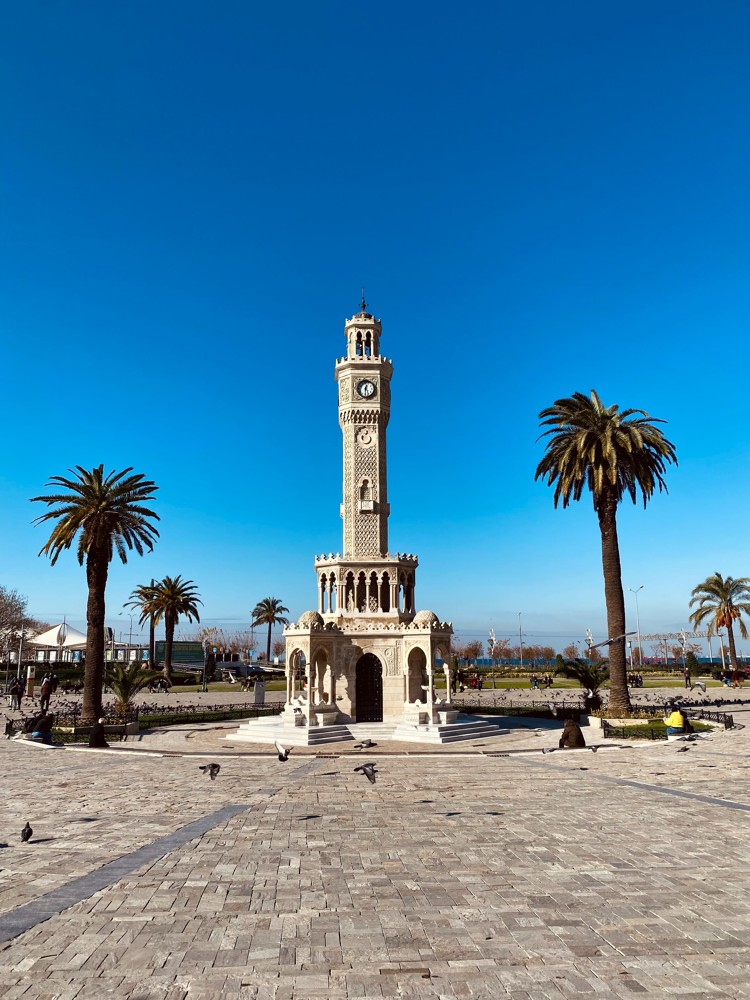
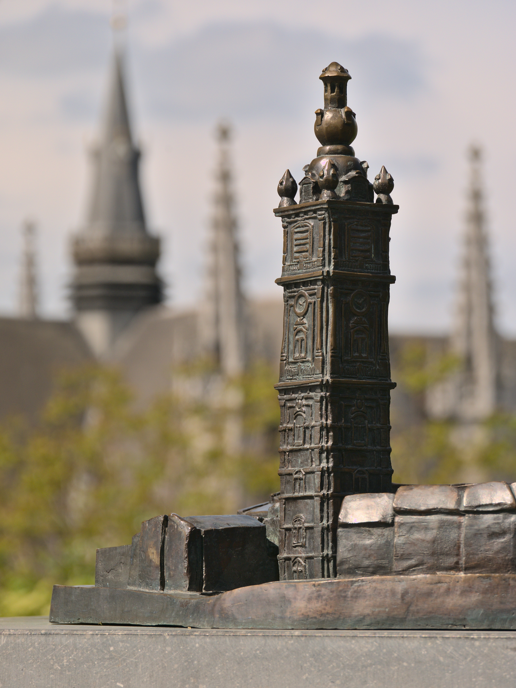

Illustration of clock tower
About clock tower
One of the best places to visit in Izmir is the Izmir Clock Tower. It has a historical atmosphere. There are many pigeons around the clock tower. You can feed them and add fun to your visit. Image by rawpixel.com on Freepik
History More IllustrationsFor the true History Lovers

The tower is really tall and fascinating. You can take beautiful photos underneath it. You can buy Izmir street food from the vendors around.

The miniature version of the tower is located in Miniature Turkey Park, but Miniature Turkey Park is in Istanbul.